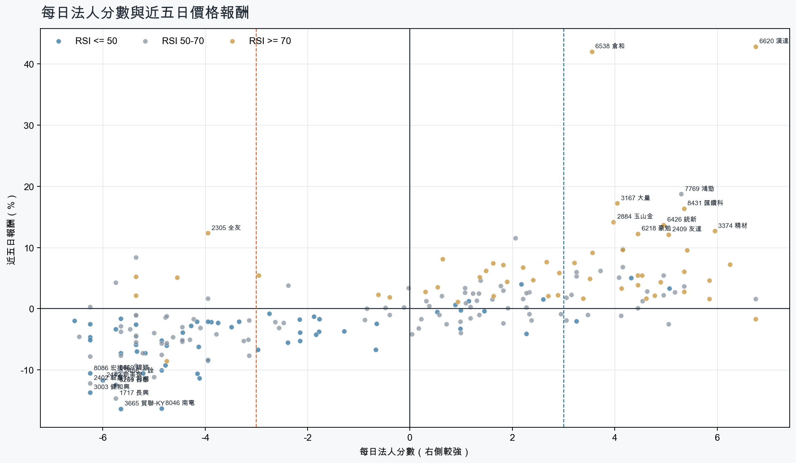
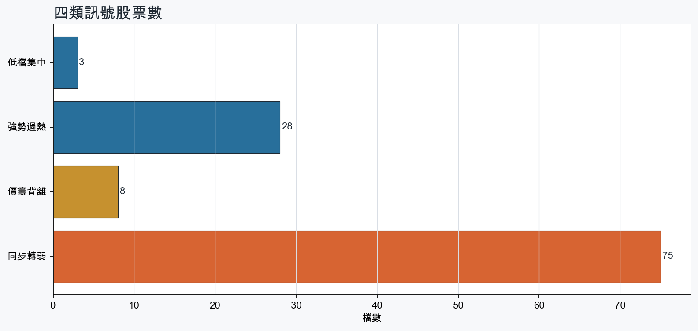
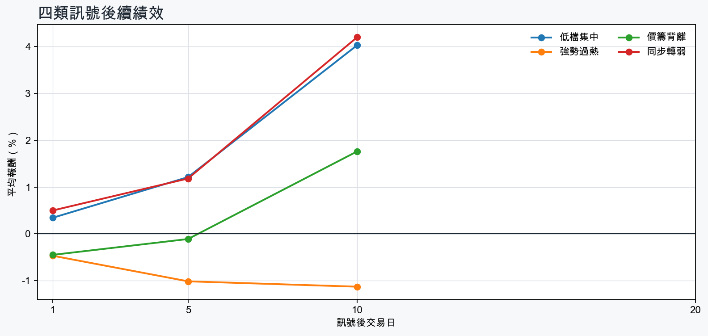

市場情緒偏空
近5日法人合計-918,428 張
篩選池上漲比例46.1%
籌碼好 / RSI低3 檔
籌碼差 / 價跌15 檔



EPS × PE VALUATION
法人常用的相對估值
顯示保守、基準與樂觀估值帶，不把單一數字包裝成精準目標價。
最新累計 EPS 依季數年化 × 同產業有效 P/E 的 Q25／中位數／Q75。排除本公司、非正 P/E，並以 1.5×IQR 排除離群值。估值帶是公開資料篩選值，不是法人目標價；未使用分析師預估 EPS。
MOOD × MONEY
情緒與籌碼雷達
熱度代表被討論程度；情緒分與法人方向分開計算。熱門不等於適合追價，樣本不足也不硬判多空。
| 股票 | 情緒 | 討論熱度 | 情緒 × 籌碼 | 情緒 × 基本面 |
|---|---|---|---|---|
| 2454 聯發科強勢過熱 | 中性分歧 +13.0信心 100 | 1002 篇 / 206 留言 / 3 則新聞 | 高熱分歧法人分 +3.6 | 基本面與情緒分歧基本面分 +3.0 |
| 1815 富喬強勢過熱 | 偏多 +21.6信心 100 | 803 篇 / 51 留言 / 3 則新聞 | 情籌共振法人分 +5.8 | 基本面與情緒共振基本面分 +3.6 |
| 2345 智邦同步轉弱 | 中性分歧 -13.1信心 75 | 791 篇 / 56 留言 / 3 則新聞 | 高熱分歧法人分 -4.1 | 基本面與情緒分歧基本面分 +3.6 |
| 6919 康霈*同步轉弱 | 中性分歧 -3.7信心 66 | 781 篇 / 55 留言 / 2 則新聞 | 高熱分歧法人分 -5.2 | 基本面與情緒分歧基本面分 -3.8 |
| 6669 緯穎同步轉弱 | 中性分歧 +5.8信心 76 | 751 篇 / 43 留言 / 3 則新聞 | 高熱分歧法人分 -5.8 | 基本面與情緒分歧基本面分 +3.0 |
| 3714 富采強勢過熱 | 情緒高漲 +35.2信心 72 | 691 篇 / 27 留言 / 3 則新聞 | 情籌共振法人分 +4.5 | 基本面與情緒共振基本面分 +1.2 |
| 3665 貿聯-KY同步轉弱 | 偏空 -19.0信心 66 | 681 篇 / 25 留言 / 3 則新聞 | 情籌混合法人分 -5.7 | 基本面與情緒分歧基本面分 +3.6 |
| 8046 南電同步轉弱 | 偏空 -32.0信心 67 | 681 篇 / 23 留言 / 3 則新聞 | 情籌雙弱法人分 -4.8 | 基本面佳、情緒悲觀基本面分 +3.6 |
| 4967 十銓強勢過熱 | 偏多 +27.9信心 52 | 651 篇 / 21 留言 / 2 則新聞 | 情籌共振法人分 +5.8 | 基本面與情緒共振基本面分 +3.6 |
| 2486 一詮同步轉弱 | 偏多 +22.7信心 57 | 611 篇 / 11 留言 / 3 則新聞 | 熱門但法人撤退法人分 -5.7 | 基本面與情緒共振基本面分 +3.0 |
| 5314 世紀*強勢過熱 | 偏空 -22.2信心 56 | 601 篇 / 10 留言 / 3 則新聞 | 法人布局、市場悲觀法人分 +4.2 | 基本面佳、情緒悲觀基本面分 +3.6 |
| 6269 台郡同步轉弱 | 中性分歧 +0.0信心 46 | 581 篇 / 11 留言 / 2 則新聞 | 情籌混合法人分 -5.8 | 基本面與情緒分歧基本面分 -1.4 |
01
籌碼好 / RSI低
優先研究基本面；法人續買且價格止穩時，才適合分批觀察。
| 股票 / 確認狀態 | 每日法人分 | 浦男式近似 | 法人加速度 | RSI / 相對強弱 | 量價確認 | 融資融券 | 每週集保確認 | 基本面 | EPS × 同業 P/E 估值 | 情緒 / 情籌 | 近期消息 | 論壇討論 |
|---|---|---|---|---|---|---|---|---|---|---|---|---|
| 2605 新興可研究 · 97 分籌碼與價格確認，可列研究清單 | +4.3法人 +4,792 張 / 4 天 | 接近 · 90站上月線；中期均線偏多；法人籌碼偏多；留意量能異常 | +850 張近3日 +2,431 / 連續 +2 日 | 48.6相對大盤 +7.0% | 量比 0.51確認分 +4.7成交量不足 | -%融資 - 張 / 融券 - 張 | -0.80 pp1000張 -1.83 pp | 單月營收年增 +36.3%；累計營收年增 +35.1%；2026 Q2 累計 EPS 3.67仍需觀察下一期財報延續性來源：公開資訊觀測站 | 基準 NT$ 82.13估值帶 67.53–107.4現價 36.50 · 低於估值帶 · 距基準 +125.0%2026 Q2 累計 EPS 3.67 → 年化 7.34航運業同業 P/E 9.20／11.19／14.63 · n=26 · 信心中等以 Q2 累計 EPS 年化，不等同分析師全年預估來源：TWSE／TPEx 每日本益比 | 樣本不足 +0.0熱度 26 / 信心 10情緒樣本不足 | 2605 新興 - 外資連兩天回補近3千張！新興卡關37元 - 股市爆料同學會CMoney · 09/08 | 近期沒有明確提及本股的論壇樣本 |
| 5608 四維航等待確認 · 86 分籌碼有訊號，但價格尚未確認 | +5.1法人 +3,618 張 / 4 天 | 接近 · 83站上月線；中期均線偏多；法人籌碼偏多；留意法人買盤未加速、量能異常 | -6,507 張近3日 -1,188 / 連續 +2 日 | 48.1相對大盤 +19.3% | 量比 0.14確認分 +1.1成交量不足；法人買盤減速 | -%融資 - 張 / 融券 - 張 | +1.71 pp1000張 +2.21 pp | 單月營收年增 +44.3%；累計營收年增 +10.1%；2026 Q2 累計 EPS 0.32仍需觀察下一期財報延續性來源：公開資訊觀測站 | 不適用年化 EPS 與交易所近四季 EPS 差異過大，可能有股本調整或一次性損益 | 樣本不足 +0.0熱度 0 / 信心 0情緒樣本不足 | 近期沒有通過股票語境篩選的新聞 | 近期沒有明確提及本股的論壇樣本 |
| 2478 大毅等待確認 · 56 分籌碼有訊號，但價格尚未確認 | +3.2法人 +1,627 張 / 2 天 | 未命中 · 46法人籌碼偏多；法人買盤加速；基本面有支撐；留意未站月線、中期均線未翻多 | +2,307 張近3日 +1,778 / 連續 -2 日 | 38.1相對大盤 -4.4% | 量比 0.36確認分 -1.4收盤跌破20日線；20日線低於60日線；近20日弱於大盤；成交量不足 | -%融資 - 張 / 融券 - 張 | -5.49 pp1000張 -8.30 pp | 單月營收年增 +47.5%；累計營收年增 +19.8%；2026 Q2 累計 EPS 2.91仍需觀察下一期財報延續性來源：公開資訊觀測站 | 基準 NT$ 151.3估值帶 104.6–254.1現價 121.0 · 估值帶內 · 距基準 +25.1%2026 Q2 累計 EPS 2.91 → 年化 5.82電子零組件同業 P/E 17.98／26.00／43.66 · n=151 · 信心中等以 Q2 累計 EPS 年化，不等同分析師全年預估來源：TWSE／TPEx 每日本益比 | 樣本不足 +0.0熱度 0 / 信心 0情緒樣本不足 | 近期沒有通過股票語境篩選的新聞 | 近期沒有明確提及本股的論壇樣本 |
02
籌碼好 / RSI高
趨勢強但不追價，等待量縮、RSI降溫或回測支撐。
| 股票 / 確認狀態 | 每日法人分 | 浦男式近似 | 法人加速度 | RSI / 相對強弱 | 量價確認 | 融資融券 | 每週集保確認 | 基本面 | EPS × 同業 P/E 估值 | 情緒 / 情籌 | 近期消息 | 論壇討論 |
|---|---|---|---|---|---|---|---|---|---|---|---|---|
| 1815 富喬等待拉回 · 100 分等拉回，不追價 | +5.8法人 +31,187 張 / 4 天 | 命中 · 96站上月線；中期均線偏多；法人籌碼偏多；留意動能位置非最佳 | +12,110 張近3日 +28,375 / 連續 +4 日 | 75.0相對大盤 +47.8% | 量比 1.61確認分 +5.9融資單日增幅偏高 | +5.1%融資 +2,124 張 / 融券 +0 張 | +22.20 pp1000張 +21.31 pp | 單月營收年增 +68.1%；累計營收年增 +46.9%；2026 Q2 累計 EPS 2.24仍需觀察下一期財報延續性來源：公開資訊觀測站 | 基準 NT$ 114.1估值帶 80.55–195.6現價 135.0 · 估值帶內 · 距基準 -15.5%2026 Q2 累計 EPS 2.24 → 年化 4.48電子零組件同業 P/E 17.98／25.47／43.66 · n=151 · 信心中等以 Q2 累計 EPS 年化，不等同分析師全年預估來源：TWSE／TPEx 每日本益比 | 偏多 +21.6熱度 80 / 信心 100情籌共振 | 富喬獲CSP認證卡位ASIC供應鏈！台玻、南亞、玻纖布五強誰能接棒？｜股市話題｜豐雲學堂2026 年 09 月sinotrade.com.tw · 09/08焦點股》富喬：內外資狂掃貨 股價飆新高自由財經 · 09/08 | [新聞] 焦點股》富喬：急拉創天價 獲利了結出籠PTT Stock · 09-04 · 19 留言[新聞] 焦點股》富喬：內外資狂掃貨 股價飆新高PTT Stock · 09-08 · 17 留言 |
| 6426 統新等待拉回 · 100 分等拉回，不追價 | +5.0法人 +3,264 張 / 3 天 | 接近 · 86站上月線；中期均線偏多；法人籌碼偏多；留意量能異常、動能位置非最佳 | +1,811 張近3日 +2,558 / 連續 +2 日 | 75.9相對大盤 +36.4% | 量比 3.37確認分 +5.3價格、量能與籌碼未見明顯弱項 | -%融資 - 張 / 融券 - 張 | +5.31 pp1000張 +4.12 pp | 單月營收年增 +52.7%；累計營收年增 +66.8%；2026 Q2 累計 EPS 2.96仍需觀察下一期財報延續性來源：公開資訊觀測站 | 基準 NT$ 125.0估值帶 88.50–213.1現價 307.0 · 高於估值帶 · 距基準 -59.3%2026 Q2 累計 EPS 2.96 → 年化 5.92通信網路同業 P/E 14.95／21.12／36.00 · n=58 · 信心中等以 Q2 累計 EPS 年化，不等同分析師全年預估來源：TWSE／TPEx 每日本益比 | 偏多 +29.7熱度 42 / 信心 30情籌共振 | 統新(6426)連三漲！訂單能見度從2週拉長至4個月，DWDM需求有多強？優分析UAnalyze · 09/08【即時新聞】統新(6426)受惠AI光通訊飆漲停，這「4檔概念股」買盤接棒上攻！CMoney · 09/08 | 近期沒有明確提及本股的論壇樣本 |
| 4939 亞電等待拉回 · 100 分等拉回，不追價 | +5.3法人 +1,466 張 / 4 天 | 接近 · 86站上月線；中期均線偏多；法人籌碼偏多；留意量能異常、動能位置非最佳 | +748 張近3日 +1,198 / 連續 +3 日 | 72.0相對大盤 +40.7% | 量比 0.22確認分 +4.5成交量不足；融資單日增幅偏高 | +11.8%融資 +724 張 / 融券 +30 張 | +5.31 pp1000張 +4.94 pp | 單月營收年增 +36.8%；累計營收年增 +13.1%；2026 Q2 累計 EPS 0.532026 Q2 累計營益率 7.0%來源：公開資訊觀測站 | 基準 NT$ 26.96估值帶 19.04–43.81現價 89.50 · 高於估值帶 · 距基準 -69.9%2026 Q2 累計 EPS 0.53 → 年化 1.06電子零組件同業 P/E 17.96／25.43／41.33 · n=150 · 信心中等以 Q2 累計 EPS 年化，不等同分析師全年預估來源：TWSE／TPEx 每日本益比 | 樣本不足 +0.0熱度 0 / 信心 0情緒樣本不足 | 近期沒有通過股票語境篩選的新聞 | 近期沒有明確提及本股的論壇樣本 |
| 2455 全新等待拉回 · 99 分等拉回，不追價 | +6.8法人 +9,198 張 / 5 天 | 接近 · 79站上月線；中期均線偏多；法人籌碼偏多；留意法人買盤未加速、量能異常 | -3,632 張近3日 +2,683 / 連續 +5 日 | 72.0相對大盤 +35.7% | 量比 0.35確認分 +1.1成交量不足；法人買盤減速 | -%融資 - 張 / 融券 - 張 | +5.28 pp1000張 +2.51 pp | 單月營收年增 +45.1%；累計營收年增 +30.5%；2026 Q2 累計 EPS 2.20仍需觀察下一期財報延續性來源：公開資訊觀測站 | 基準 NT$ 93.72估值帶 65.96–169.5現價 515.0 · 高於估值帶 · 距基準 -81.8%2026 Q2 累計 EPS 2.20 → 年化 4.40通信網路同業 P/E 14.99／21.30／38.53 · n=59 · 信心中等以 Q2 累計 EPS 年化，不等同分析師全年預估來源：TWSE／TPEx 每日本益比 | 偏多 +29.7熱度 42 / 信心 30情籌共振 | 法國巴黎人壽全新推出「價值大師 」投資型保險專案 攜手永豐銀行、中國信託投信推出「Shiller全球多元配置策略投資帳戶」 以「全、智、動」掌握環境變化下的多元投資新契機財訊 · 09/08全新AI光通訊動能強，明年獲利看俏- 新聞MoneyDJ · 09/08 | 近期沒有明確提及本股的論壇樣本 |
| 3141 晶宏等待拉回 · 100 分等拉回，不追價 | +4.5法人 +1,539 張 / 3 天 | 命中 · 89站上月線；中期均線偏多；法人籌碼偏多；留意法人買盤未加速、動能位置非最佳 | -3,243 張近3日 -159 / 連續 -1 日 | 77.8相對大盤 +18.4% | 量比 1.39確認分 +3.1法人買盤減速 | -7.0%融資 -530 張 / 融券 -122 張 | +12.67 pp1000張 +12.37 pp | 單月營收年增 +39.6%；累計營收年增 +16.0%；2026 Q2 累計 EPS 2.19仍需觀察下一期財報延續性來源：公開資訊觀測站 | 基準 NT$ 114.4估值帶 79.23–199.2現價 95.40 · 估值帶內 · 距基準 +19.9%2026 Q2 累計 EPS 2.19 → 年化 4.38半導體同業 P/E 18.09／26.12／45.47 · n=148 · 信心中等以 Q2 累計 EPS 年化，不等同分析師全年預估來源：TWSE／TPEx 每日本益比 | 樣本不足 -9.9熱度 26 / 信心 10情緒樣本不足 | 盈餘：晶宏(3141)股價遭警示，自結7月歸屬母公司淨利4300萬元，EPS 0.58元富聯網 · 09/08 | 近期沒有明確提及本股的論壇樣本 |
| 3693 營邦等待拉回 · 100 分等拉回，不追價 | +6.2法人 +2,411 張 / 5 天 | 接近 · 78站上月線；中期均線偏多；法人籌碼偏多；留意法人買盤未加速、量能尚未確認 | -687 張近3日 +1,092 / 連續 +10 日 | 91.7相對大盤 +31.6% | 量比 2.65確認分 +1.8法人買盤減速 | -1.7%融資 -73 張 / 融券 +19 張 | +5.23 pp1000張 +2.90 pp | 單月營收年增 +148.9%；累計營收年增 +11.1%；2026 Q2 累計 EPS 8.66仍需觀察下一期財報延續性來源：公開資訊觀測站 | 基準 NT$ 269.7估值帶 218.2–408.9現價 669.0 · 高於估值帶 · 距基準 -59.7%2026 Q2 累計 EPS 8.66 → 年化 17.32電腦及週邊同業 P/E 12.60／15.57／23.61 · n=78 · 信心中等以 Q2 累計 EPS 年化，不等同分析師全年預估來源：TWSE／TPEx 每日本益比 | 偏空 -28.1熱度 55 / 信心 28法人布局、市場悲觀 | 近期沒有通過股票語境篩選的新聞 | [情報] 3693 營邦 115年8月營收PTT Stock · 09-07 · 13 留言 |
| 3374 精材等待拉回 · 94 分等拉回，不追價 | +6.0法人 +3,363 張 / 5 天 | 接近 · 73站上月線；中期均線偏多；法人籌碼偏多；留意法人買盤未加速、量能異常 | -2,351 張近3日 +2,316 / 連續 +10 日 | 88.4相對大盤 +37.8% | 量比 0.23確認分 +1.1成交量不足；法人買盤減速 | +2.5%融資 +724 張 / 融券 +42 張 | +3.86 pp1000張 +2.41 pp | 單月營收年增 +31.0%；累計營收年增 +32.6%；2026 Q2 累計 EPS 2.88仍需觀察下一期財報延續性來源：公開資訊觀測站 | 基準 NT$ 147.2估值帶 104.0–259.8現價 475.0 · 高於估值帶 · 距基準 -69.0%2026 Q2 累計 EPS 2.88 → 年化 5.76半導體同業 P/E 18.06／25.56／45.11 · n=147 · 信心中等以 Q2 累計 EPS 年化，不等同分析師全年預估來源：TWSE／TPEx 每日本益比 | 樣本不足 +0.0熱度 26 / 信心 10情緒樣本不足 | 3374 精材- 宇川精材115年8月營收1794萬、年增46.43% - 股市爆料同學會CMoney · 09/08 | 近期沒有明確提及本股的論壇樣本 |
| 6538 倉和等待拉回 · 100 分等拉回，不追價 | +3.5法人 +1,067 張 / 2 天 | 接近 · 75站上月線；中期均線偏多；法人籌碼偏多；留意買超延續不足、量能異常 | +1,033 張近3日 +1,080 / 連續 +1 日 | 85.9相對大盤 +114.0% | 量比 0.33確認分 +5.2成交量不足 | +2.6%融資 +227 張 / 融券 +125 張 | +6.64 pp1000張 +11.10 pp | 單月營收年增 +63.4%；2026 Q2 累計 EPS 2.10；2026 Q2 累計營益率 13.8%累計營收年增 -6.5%來源：公開資訊觀測站 | 基準 NT$ 107.0估值帶 75.52–177.2現價 321.0 · 高於估值帶 · 距基準 -66.7%2026 Q2 累計 EPS 2.10 → 年化 4.20電子零組件同業 P/E 17.98／25.47／42.20 · n=151 · 信心較低以 Q2 累計 EPS 年化，不等同分析師全年預估；年化 EPS 為交易所近四季 EPS 的 2.41 倍，需保守解讀來源：TWSE／TPEx 每日本益比 | 情緒高漲 +44.0熱度 53 / 信心 44情籌共振 | 【09/08處置股公告】倉和(6538) 09/08到09/14列入處置股，約每2分鐘撮合一次-CMoney 小編CMoney投資網誌 · 09/08【09:50 即時新聞】倉和(6538)股價上漲逾6%，受太陽能非中市場需求與營收成長加持＋主力、法人同步偏多推升多頭結構CMoney投資網誌 · 09/08 | [情報] 6538 倉和 8月自結:0.86 年增:8,500%PTT Stock · 09-08 · 5 留言 |
| 5314 世紀*等待拉回 · 100 分等拉回，不追價 | +4.2法人 +4,581 張 / 3 天 | 命中 · 96站上月線；中期均線偏多；法人籌碼偏多；留意動能位置非最佳 | +6,288 張近3日 +5,186 / 連續 +3 日 | 74.7相對大盤 +158.9% | 量比 1.65確認分 +6.5價格、量能與籌碼未見明顯弱項 | -0.6%融資 -61 張 / 融券 +85 張 | -1.44 pp1000張 -0.74 pp | 單月營收年增 +149.6%；累計營收年增 +159.9%；2026 Q2 累計 EPS 0.66仍需觀察下一期財報延續性來源：公開資訊觀測站 | 基準 NT$ 19.14估值帶 13.90–31.32現價 38.70 · 高於估值帶 · 距基準 -50.5%2026 Q2 累計 EPS 0.66 → 年化 1.32其他同業 P/E 10.53／14.50／23.73 · n=71 · 信心較低以 Q2 累計 EPS 年化，不等同分析師全年預估；年化 EPS 為交易所近四季 EPS 的 0.29 倍，需保守解讀來源：TWSE／TPEx 每日本益比 | 偏空 -22.2熱度 60 / 信心 56法人布局、市場悲觀 | 世紀*解禁出關再亮燈！連2日漲停 委買逾1.58萬張自由財經 · 09/08熱門股／世紀*出關首日再飆漲停！現金股利調降近76%、9/21將除息| 產經非凡新聞台 · 09/08 | [情報] 5314*世紀現金股利除息基準日 調整配股率PTT Stock · 09-04 · 10 留言 |
| 3714 富采等待拉回 · 100 分等拉回，不追價 | +4.5法人 +8,276 張 / 3 天 | 命中 · 87站上月線；中期均線偏多；法人籌碼偏多；留意量能尚未確認、動能位置非最佳 | +3,614 張近3日 +6,633 / 連續 -2 日 | 73.9相對大盤 +11.5% | 量比 0.89確認分 +5.8價格、量能與籌碼未見明顯弱項 | -%融資 - 張 / 融券 - 張 | +0.99 pp1000張 +1.00 pp | 單月營收年增 +24.9%；累計營收年增 +5.1%；2026 Q2 累計 EPS 1.492026 Q2 累計營益率 -5.9%來源：公開資訊觀測站 | 基準 NT$ 69.61估值帶 36.86–113.3現價 64.90 · 估值帶內 · 距基準 +7.3%2026 Q2 累計 EPS 1.49 → 年化 2.98光電同業 P/E 12.37／23.36／38.03 · n=71 · 信心較低以 Q2 累計 EPS 年化，不等同分析師全年預估；交易所無有效本益比，無法交叉檢核近四季 EPS來源：TWSE／TPEx 每日本益比 | 情緒高漲 +35.2熱度 69 / 信心 72情籌共振 | 晶豪科、富采、群創股價大怒神！四大慘業的轉型，投資人還能相信故事嗎- 上市櫃旺得富理財網 · 09/08富采營收／8月21.72億元、年增14.23% 前八月年增6.22%UDN · 09/07 | [新聞]鼎元12年來首度現增拚光通訊 大股東富采跟PTT Stock · 09-04 · 27 留言 |
| 6218 豪勉等待拉回 · 84 分等拉回，不追價 | +4.5法人 +2,293 張 / 3 天 | 接近 · 73站上月線；中期均線偏多；法人籌碼偏多；留意法人買盤未加速、量能異常 | -123 張近3日 +1,327 / 連續 +2 日 | 78.4相對大盤 +26.2% | 量比 3.95確認分 +0.8法人買盤減速；融資單日增幅偏高 | +15.3%融資 +226 張 / 融券 +4 張 | +3.38 pp1000張 +1.69 pp | 單月營收年增 +34.2%；累計營收年增 +13.1%；2026 Q2 累計 EPS 2.412026 Q2 累計營益率 6.6%來源：公開資訊觀測站 | 基準 NT$ 101.8估值帶 72.06–191.3現價 46.70 · 低於估值帶 · 距基準 +118.0%2026 Q2 累計 EPS 2.41 → 年化 4.82通信網路同業 P/E 14.95／21.12／39.70 · n=58 · 信心較低以 Q2 累計 EPS 年化，不等同分析師全年預估；年化 EPS 為交易所近四季 EPS 的 2.87 倍，需保守解讀來源：TWSE／TPEx 每日本益比 | 樣本不足 +0.0熱度 26 / 信心 10情緒樣本不足 | 【10:51 即時新聞】豪勉(6218)股價勁揚至47.3元，營收爆發與多頭籌碼加持＋技術面均線多頭排列支撐續攻CMoney投資網誌 · 09/08 | 近期沒有明確提及本股的論壇樣本 |
| 6620 漢達等待拉回 · 100 分等拉回，不追價 | +6.8法人 +3,465 張 / 5 天 | 接近 · 66站上月線；法人籌碼偏多；法人買盤加速；留意中期均線未翻多、量能異常 | +2,130 張近3日 +2,778 / 連續 +5 日 | 87.6相對大盤 +57.3% | 量比 3.11確認分 +4.820日線低於60日線；融資單日增幅偏高 | +11.7%融資 +481 張 / 融券 +27 張 | +1.07 pp1000張 +0.72 pp | 單月營收年增 +0.6%；2026 Q2 累計 EPS 0.65；2026 Q2 累計營益率 25.4%累計營收年增 -51.1%來源：公開資訊觀測站 | 基準 NT$ 18.76估值帶 15.16–23.91現價 124.0 · 高於估值帶 · 距基準 -84.9%2026 Q2 累計 EPS 0.65 → 年化 1.30生技醫療同業 P/E 11.66／14.43／18.39 · n=83 · 信心較低以 Q2 累計 EPS 年化，不等同分析師全年預估；年化 EPS 為交易所近四季 EPS 的 0.45 倍，需保守解讀來源：TWSE／TPEx 每日本益比 | 中性分歧 +0.0熱度 58 / 信心 29情籌混合 | 近期沒有通過股票語境篩選的新聞 | [新聞] 漢達抗癌新藥 獲美 FDA 許可 逸達、泰合PTT Stock · 09-05 · 17 留言 |
| 2454 聯發科等待拉回 · 100 分等拉回，不追價 | +3.6法人 +6,876 張 / 4 天 | 命中 · 91站上月線；中期均線偏多；法人籌碼偏多；留意量能尚未確認、動能位置非最佳 | +4,220 張近3日 +5,501 / 連續 +4 日 | 75.1相對大盤 +12.8% | 量比 0.81確認分 +5.8價格、量能與籌碼未見明顯弱項 | -%融資 - 張 / 融券 - 張 | -0.43 pp1000張 -1.01 pp | 單月營收年增 +12.2%；累計營收年增 +0.8%；2026 Q2 累計 EPS 30.44仍需觀察下一期財報延續性來源：公開資訊觀測站 | 基準 NT$ 1,556估值帶 1,099–2,746現價 4,710 · 高於估值帶 · 距基準 -67.0%2026 Q2 累計 EPS 30.44 → 年化 60.88半導體同業 P/E 18.06／25.56／45.11 · n=147 · 信心中等以 Q2 累計 EPS 年化，不等同分析師全年預估來源：TWSE／TPEx 每日本益比 | 中性分歧 +13.0熱度 100 / 信心 100高熱分歧 | 聯發科與輝達強強聯手！達發上半季EPS歷史高。低軌衛星與AI連網雙引擎發擊理財周刊 · 09/08三大法人買賣超 – 外資買超(2330)台積電、(2454)聯發科，投信買超(2454)聯發科、(2303)聯電，法人合計買超1138.65億元sinotrade.com.tw · 09/07 | [新聞] 聯發科包場六福村水陸雙樂園 近2.5萬名PTT Stock · 09-06 · 135 留言[情報] 2545 皇翔 買國巨380張、聯發科123張PTT Stock · 09-07 · 71 留言 |
| 5876 上海商銀等待拉回 · 100 分等拉回，不追價 | +5.4法人 +32,632 張 / 5 天 | 接近 · 90站上月線；中期均線偏多；法人籌碼偏多；留意RSI過熱 | +399 張近3日 +20,674 / 連續 +6 日 | 80.3相對大盤 +8.7% | 量比 2.21確認分 +4.6價格、量能與籌碼未見明顯弱項 | -%融資 - 張 / 融券 - 張 | +0.17 pp1000張 +0.10 pp | 單月營收年增 +19.6%；累計營收年增 +1.3%；2026 Q2 累計 EPS 2.08仍需觀察下一期財報延續性來源：公開資訊觀測站 | 基準 NT$ 54.25估值帶 30.16–66.89現價 48.75 · 估值帶內 · 距基準 +11.3%2026 Q2 累計 EPS 2.08 → 年化 4.16金融保險同業 P/E 7.25／13.04／16.08 · n=39 · 信心中等以 Q2 累計 EPS 年化，不等同分析師全年預估來源：TWSE／TPEx 每日本益比 | 偏多 +29.7熱度 42 / 信心 30情籌共振 | 【2026/08月營收公告】上海商銀(5876) 八月營收月減年增，全年營運續看向上CMoney · 09/08上海商銀獲利／前八月136億元、年增20% EPS 2.79元穩居銀行股之冠UDN · 09/08 | 近期沒有明確提及本股的論壇樣本 |
| 4967 十銓等待拉回 · 96 分等拉回，不追價 | +5.8法人 +2,299 張 / 4 天 | 接近 · 85站上月線；中期均線偏多；法人籌碼偏多；留意相對強度普通、動能位置非最佳 | +4,154 張近3日 +3,464 / 連續 +3 日 | 72.0相對大盤 -2.2% | 量比 1.51確認分 +4.0價格、量能與籌碼未見明顯弱項 | -%融資 - 張 / 融券 - 張 | -5.28 pp1000張 -0.97 pp | 單月營收年增 +98.7%；累計營收年增 +71.3%；2026 Q2 累計 EPS 53.44仍需觀察下一期財報延續性來源：公開資訊觀測站 | 基準 NT$ 2,860估值帶 1,939–4,860現價 280.5 · 低於估值帶 · 距基準 +919.6%2026 Q2 累計 EPS 53.44 → 年化 106.9半導體同業 P/E 18.14／26.76／45.47 · n=148 · 信心中等以 Q2 累計 EPS 年化，不等同分析師全年預估來源：TWSE／TPEx 每日本益比 | 偏多 +27.9熱度 65 / 信心 52情籌共振 | 4967 十銓 - 趨勢不變…..？ - 股市爆料同學會CMoney · 09/084967 十銓 - 走拉高緩跌緩慢 - 股市爆料同學會CMoney · 09/08 | [新聞] 《半導體》十銓8月營收登史上第3高 前8PTT Stock · 09-07 · 21 留言 |
03
籌碼差 / 股價上漲
可能是事件行情或軋空；沒有籌碼改善前避免追高。
| 股票 / 確認狀態 | 每日法人分 | 浦男式近似 | 法人加速度 | RSI / 相對強弱 | 量價確認 | 融資融券 | 每週集保確認 | 基本面 | EPS × 同業 P/E 估值 | 情緒 / 情籌 | 近期消息 | 論壇討論 |
|---|---|---|---|---|---|---|---|---|---|---|---|---|
| 2305 全友風險警示 · 50 分背離警戒，避免追高 | -4.0法人 -2,759 張 / 2 天 | 未命中 · 51站上月線；明顯強於大盤；基本面有支撐；留意中期均線未翻多、法人籌碼偏弱 | -754 張近3日 -2,171 / 連續 -1 日 | 73.9相對大盤 +17.4% | 量比 3.19確認分 +1.420日線低於60日線；法人買盤減速 | -%融資 - 張 / 融券 - 張 | +0.30 pp1000張 -1.37 pp | 單月營收年增 +197.8%；累計營收年增 +96.8%；2026 Q2 累計 EPS 0.51仍需觀察下一期財報延續性來源：公開資訊觀測站 | 基準 NT$ 15.88估值帶 12.85–24.08現價 33.20 · 高於估值帶 · 距基準 -52.2%2026 Q2 累計 EPS 0.51 → 年化 1.02電腦及週邊同業 P/E 12.60／15.57／23.61 · n=78 · 信心中等以 Q2 累計 EPS 年化，不等同分析師全年預估來源：TWSE／TPEx 每日本益比 | 樣本不足 +9.9熱度 26 / 信心 10情緒樣本不足 | 【0908台股盤後】加權指數尾盤拉回 220 點收 47,105 點！權王台積電逆勢撐盤，營收創高模範生鎖碼國巨、全友、矽統sinotrade.com.tw · 09/08 | 近期沒有明確提及本股的論壇樣本 |
| 6207 雷科風險警示 · 45 分背離警戒，避免追高 | -5.3法人 -4,174 張 / 1 天 | 接近 · 58站上月線；法人買盤加速；明顯強於大盤；留意中期均線未翻多、法人籌碼偏弱 | +1,576 張近3日 -1,259 / 連續 -2 日 | 64.4相對大盤 +4.5% | 量比 3.77確認分 +3.020日線低於60日線 | +1.6%融資 +86 張 / 融券 +27 張 | -1.76 pp1000張 -0.62 pp | 單月營收年增 +6.3%；累計營收年增 +4.2%；2026 Q2 累計 EPS 1.112026 Q2 累計營益率 5.7%來源：公開資訊觀測站 | 基準 NT$ 56.45估值帶 39.87–91.75現價 116.5 · 高於估值帶 · 距基準 -51.5%2026 Q2 累計 EPS 1.11 → 年化 2.22電子零組件同業 P/E 17.96／25.43／41.33 · n=150 · 信心中等以 Q2 累計 EPS 年化，不等同分析師全年預估來源：TWSE／TPEx 每日本益比 | 樣本不足 +9.9熱度 26 / 信心 10情緒樣本不足 | 雷科(6207)訂單看到2027上半年！在手訂單破10億元，自製設備倍增成毛利率33%關鍵news.cnyes.com · 09/08 | 近期沒有明確提及本股的論壇樣本 |
| 8996 高力風險警示 · 42 分背離警戒，避免追高 | -5.8法人 -3,175 張 / 0 天 | 接近 · 75站上月線；中期均線偏多；明顯強於大盤；留意法人籌碼偏弱、法人買盤未加速 | -1,739 張近3日 -2,694 / 連續 -10 日 | 55.6相對大盤 +10.6% | 量比 1.16確認分 +2.5法人買盤減速 | -%融資 - 張 / 融券 - 張 | -2.53 pp1000張 -6.00 pp | 單月營收年增 +57.6%；累計營收年增 +115.4%；2026 Q2 累計 EPS 8.69仍需觀察下一期財報延續性來源：公開資訊觀測站 | 基準 NT$ 349.9估值帶 239.5–556.0現價 1,225 · 高於估值帶 · 距基準 -71.4%2026 Q2 累計 EPS 8.69 → 年化 17.38電機機械同業 P/E 13.78／20.13／31.99 · n=73 · 信心中等以 Q2 累計 EPS 年化，不等同分析師全年預估來源：TWSE／TPEx 每日本益比 | 樣本不足 +0.0熱度 0 / 信心 0情緒樣本不足 | 近期沒有通過股票語境篩選的新聞 | 近期沒有明確提及本股的論壇樣本 |
| 4526 東台風險警示 · 36 分背離警戒，避免追高 | -5.3法人 -7,088 張 / 1 天 | 未命中 · 43站上月線；法人買盤加速；相對大盤偏強；留意中期均線未翻多、法人籌碼偏弱 | +2,184 張近3日 -2,612 / 連續 -4 日 | 77.8相對大盤 +0.5% | 量比 2.92確認分 +2.420日線低於60日線 | -%融資 - 張 / 融券 - 張 | -1.70 pp1000張 -1.16 pp | 單月營收年增 +57.1%；累計營收年增 +1.8%2026 Q2 累計 EPS -1.02；2026 Q2 累計營益率 -9.8%來源：公開資訊觀測站 | 不適用年化 EPS 非正數，不適合使用本益比估值 | 樣本不足 +0.0熱度 0 / 信心 0情緒樣本不足 | 近期沒有通過股票語境篩選的新聞 | 近期沒有明確提及本股的論壇樣本 |
| 2419 仲琦風險警示 · 59 分背離警戒，避免追高 | -4.5法人 -2,569 張 / 1 天 | 接近 · 60站上月線；法人買盤加速；明顯強於大盤；留意中期均線未翻多、法人籌碼偏弱 | +825 張近3日 -773 / 連續 -4 日 | 72.1相對大盤 +3.9% | 量比 0.96確認分 +5.520日線低於60日線 | -%融資 - 張 / 融券 - 張 | -0.22 pp1000張 -0.36 pp | 2026 Q2 累計 EPS 0.14單月營收年增 -3.8%；累計營收年增 -3.9%；2026 Q2 累計營益率 1.5%來源：公開資訊觀測站 | 不適用年化 EPS 與交易所近四季 EPS 差異過大，可能有股本調整或一次性損益 | 樣本不足 +0.0熱度 0 / 信心 0情緒樣本不足 | 近期沒有通過股票語境篩選的新聞 | 近期沒有明確提及本股的論壇樣本 |
| 3645 達邁風險警示 · 19 分背離警戒，避免追高 | -6.2法人 -2,670 張 / 0 天 | 未命中 · 57站上月線；明顯強於大盤；量價健康；留意中期均線未翻多、法人籌碼偏弱 | -991 張近3日 -2,097 / 連續 -10 日 | 66.0相對大盤 +4.3% | 量比 1.96確認分 +0.120日線低於60日線；法人買盤減速 | -%融資 - 張 / 融券 - 張 | -3.89 pp1000張 -6.80 pp | 2026 Q2 累計 EPS 1.52；2026 Q2 累計營益率 21.3%單月營收年增 -32.6%；累計營收年增 -1.5%來源：公開資訊觀測站 | 基準 NT$ 77.43估值帶 54.66–132.7現價 73.70 · 估值帶內 · 距基準 +5.1%2026 Q2 累計 EPS 1.52 → 年化 3.04電子零組件同業 P/E 17.98／25.47／43.66 · n=151 · 信心中等以 Q2 累計 EPS 年化，不等同分析師全年預估來源：TWSE／TPEx 每日本益比 | 樣本不足 +0.0熱度 26 / 信心 10情緒樣本不足 | 【11:31 即時新聞】達邁(3645)股價上漲至74.4元、漲幅3.62%，受軟板與PI材料題材支撐，短期反彈但主力與法人賣壓仍重CMoney投資網誌 · 09/08 | 近期沒有明確提及本股的論壇樣本 |
| 6168 宏齊風險警示 · 46 分背離警戒，避免追高 | -5.3法人 -3,181 張 / 1 天 | 未命中 · 57站上月線；明顯強於大盤；量價健康；留意中期均線未翻多、法人籌碼偏弱 | -1,987 張近3日 -2,573 / 連續 -4 日 | 71.4相對大盤 +11.7% | 量比 1.14確認分 +2.520日線低於60日線；法人買盤減速 | -%融資 - 張 / 融券 - 張 | +2.05 pp1000張 -0.16 pp | 單月營收年增 +12.8%；累計營收年增 +7.8%；2026 Q2 累計 EPS 0.172026 Q2 累計營益率 -0.4%來源：公開資訊觀測站 | 基準 NT$ 7.87估值帶 4.14–12.68現價 28.55 · 高於估值帶 · 距基準 -72.4%2026 Q2 累計 EPS 0.17 → 年化 0.34光電同業 P/E 12.19／23.16／37.29 · n=70 · 信心中等以 Q2 累計 EPS 年化，不等同分析師全年預估來源：TWSE／TPEx 每日本益比 | 樣本不足 +0.0熱度 0 / 信心 0情緒樣本不足 | 近期沒有通過股票語境篩選的新聞 | 近期沒有明確提及本股的論壇樣本 |
| 6147 頎邦風險警示 · 58 分背離警戒，避免追高 | -4.0法人 -12,557 張 / 2 天 | 接近 · 65站上月線；明顯強於大盤；量價健康；留意中期均線未翻多、法人籌碼偏弱 | -24,079 張近3日 -18,538 / 連續 -1 日 | 64.4相對大盤 +11.1% | 量比 1.52確認分 +2.520日線低於60日線；法人買盤減速 | +1.6%融資 +642 張 / 融券 +47 張 | +0.53 pp1000張 +1.23 pp | 單月營收年增 +39.2%；累計營收年增 +20.9%；2026 Q2 累計 EPS 1.87仍需觀察下一期財報延續性來源：公開資訊觀測站 | 基準 NT$ 97.69估值帶 67.66–170.1現價 186.5 · 高於估值帶 · 距基準 -47.6%2026 Q2 累計 EPS 1.87 → 年化 3.74半導體同業 P/E 18.09／26.12／45.47 · n=148 · 信心中等以 Q2 累計 EPS 年化，不等同分析師全年預估來源：TWSE／TPEx 每日本益比 | 中性分歧 +0.0熱度 42 / 信心 30情籌混合 | 6147 頎邦 - 媳婦即將熬成婆！加油現在的頎邦未來（硬梆梆） - 股市爆料同學會CMoney · 09/08頎邦8月營收月增3.8%TechNews 科技新報 · 09/08 | 近期沒有明確提及本股的論壇樣本 |
04
籌碼差 / 股價下跌
籌碼與價格同弱，原則上迴避，等待法人與大戶同時回補。
| 股票 / 確認狀態 | 每日法人分 | 浦男式近似 | 法人加速度 | RSI / 相對強弱 | 量價確認 | 融資融券 | 每週集保確認 | 基本面 | EPS × 同業 P/E 估值 | 情緒 / 情籌 | 近期消息 | 論壇討論 |
|---|---|---|---|---|---|---|---|---|---|---|---|---|
| 8046 南電風險警示 · 24 分迴避，等待籌碼翻正 | -4.8法人 -7,185 張 / 1 天 | 未命中 · 37中期均線偏多；法人買盤加速；基本面有支撐；留意未站月線、法人籌碼偏弱 | +10,391 張近3日 +1,210 / 連續 -2 日 | 34.7相對大盤 -15.3% | 量比 0.48確認分 -2.4收盤跌破20日線；近20日弱於大盤；成交量不足 | -%融資 - 張 / 融券 - 張 | -1.65 pp1000張 -1.71 pp | 單月營收年增 +50.2%；累計營收年增 +39.4%；2026 Q2 累計 EPS 5.53仍需觀察下一期財報延續性來源：公開資訊觀測站 | 基準 NT$ 281.7估值帶 198.9–466.7現價 1,025 · 高於估值帶 · 距基準 -72.5%2026 Q2 累計 EPS 5.53 → 年化 11.06電子零組件同業 P/E 17.98／25.47／42.20 · n=151 · 信心中等以 Q2 累計 EPS 年化，不等同分析師全年預估來源：TWSE／TPEx 每日本益比 | 偏空 -32.0熱度 68 / 信心 67情籌雙弱 | PCB族群漲跌互見！「玻纖布廠」盤中衝新高價、定穎漲逾半根 南電收連8黑、台虹漲停直摔跌停Yahoo股市 · 09/08南電、景碩、欣興、臻鼎...載板4雄誰跌出CP值？瑤池金母砸「2.74億元買這檔」 華星光、高力、日月光...6大主動式ETF高割離席清單曝光- 上市櫃旺得富理財網 · 09/08 | [新聞] 法人點名祥碩、南電、健策、華邦電、中PTT Stock · 09-04 · 23 留言 |
| 3665 貿聯-KY風險警示 · 28 分迴避，等待籌碼翻正 | -5.7法人 -3,374 張 / 1 天 | 未命中 · 53中期均線偏多；法人買盤加速；量價健康；留意未站月線、法人籌碼偏弱 | +264 張近3日 -1,426 / 連續 -2 日 | 40.2相對大盤 -16.4% | 量比 1.14確認分 -1.4收盤跌破20日線；近20日弱於大盤 | -%融資 - 張 / 融券 - 張 | -0.43 pp1000張 -0.31 pp | 單月營收年增 +59.6%；累計營收年增 +37.9%；2026 Q2 累計 EPS 26.94仍需觀察下一期財報延續性來源：公開資訊觀測站 | 基準 NT$ 1,048估值帶 780.7–1,586現價 1,935 · 高於估值帶 · 距基準 -45.8%2026 Q2 累計 EPS 26.94 → 年化 53.88其他電子同業 P/E 14.49／19.45／29.44 · n=67 · 信心中等以 Q2 累計 EPS 年化，不等同分析師全年預估來源：TWSE／TPEx 每日本益比 | 偏空 -19.0熱度 68 / 信心 66情籌混合 | 貿聯-KY 8月營收88.91億元 年增54%創同期高news.cnyes.com · 09/04貿聯-KY 8月營收逾88億 寫單月次高自由財經 · 09/04 | [情報] 3665 貿聯-KY 8月營收PTT Stock · 09-04 · 25 留言 |
| 8086 宏捷科風險警示 · 14 分迴避，等待籌碼翻正 | -6.2法人 -6,987 張 / 0 天 | 未命中 · 33法人買盤加速；基本面有支撐；流動性足夠；留意未站月線、中期均線未翻多 | +1,040 張近3日 -2,268 / 連續 -5 日 | 41.5相對大盤 -10.0% | 量比 0.43確認分 -2.4收盤跌破20日線；20日線低於60日線；近20日弱於大盤；成交量不足 | +0.9%融資 +97 張 / 融券 +3 張 | -7.38 pp1000張 -8.59 pp | 單月營收年增 +18.4%；累計營收年增 +40.0%；2026 Q2 累計 EPS 2.93仍需觀察下一期財報延續性來源：公開資訊觀測站 | 基準 NT$ 156.8估值帶 106.0–266.4現價 110.0 · 估值帶內 · 距基準 +42.6%2026 Q2 累計 EPS 2.93 → 年化 5.86半導體同業 P/E 18.09／26.76／45.47 · n=148 · 信心中等以 Q2 累計 EPS 年化，不等同分析師全年預估來源：TWSE／TPEx 每日本益比 | 樣本不足 +0.0熱度 0 / 信心 0情緒樣本不足 | 近期沒有通過股票語境篩選的新聞 | 近期沒有明確提及本股的論壇樣本 |
| 1714 和桐風險警示 · 21 分迴避，等待籌碼翻正 | -5.8法人 -23,043 張 / 0 天 | 未命中 · 37法人買盤加速；基本面有支撐；動能強但未過熱；留意未站月線、中期均線未翻多 | +11,478 張近3日 -4,084 / 連續 -5 日 | 45.3相對大盤 -6.8% | 量比 0.31確認分 -2.0收盤跌破20日線；20日線低於60日線；近20日弱於大盤；成交量不足 | -%融資 - 張 / 融券 - 張 | -2.19 pp1000張 -2.86 pp | 單月營收年增 +77.4%；累計營收年增 +61.2%；2026 Q2 累計 EPS 0.89仍需觀察下一期財報延續性來源：公開資訊觀測站 | 基準 NT$ 32.57估值帶 23.21–45.44現價 16.25 · 低於估值帶 · 距基準 +100.5%2026 Q2 累計 EPS 0.89 → 年化 1.78化學工業同業 P/E 13.04／18.30／25.53 · n=32 · 信心中等以 Q2 累計 EPS 年化，不等同分析師全年預估來源：TWSE／TPEx 每日本益比 | 樣本不足 +0.0熱度 0 / 信心 0情緒樣本不足 | 近期沒有通過股票語境篩選的新聞 | 近期沒有明確提及本股的論壇樣本 |
| 2442 新美齊風險警示 · 8 分迴避，等待籌碼翻正 | -6.0法人 -3,051 張 / 0 天 | 未命中 · 40中期均線偏多；量價健康；基本面有支撐；留意未站月線、法人籌碼偏弱 | -493 張近3日 -2,079 / 連續 -9 日 | 22.1相對大盤 -16.8% | 量比 1.59確認分 -4.9收盤跌破20日線；近20日弱於大盤；法人買盤減速 | -%融資 - 張 / 融券 - 張 | -1.55 pp1000張 -0.34 pp | 單月營收年增 +233.9%；累計營收年增 +396.7%；2026 Q2 累計 EPS 1.16仍需觀察下一期財報延續性來源：公開資訊觀測站 | 基準 NT$ 22.99估值帶 16.38–31.23現價 15.95 · 低於估值帶 · 距基準 +44.1%2026 Q2 累計 EPS 1.16 → 年化 2.32建材營造同業 P/E 7.06／9.91／13.46 · n=63 · 信心較低以 Q2 累計 EPS 年化，不等同分析師全年預估；年化 EPS 為交易所近四季 EPS 的 0.46 倍，需保守解讀來源：TWSE／TPEx 每日本益比 | 樣本不足 +0.0熱度 0 / 信心 0情緒樣本不足 | 近期沒有通過股票語境篩選的新聞 | 近期沒有明確提及本股的論壇樣本 |
| 2402 毅嘉風險警示 · 27 分迴避，等待籌碼翻正 | -6.2法人 -3,900 張 / 0 天 | 未命中 · 42法人買盤加速；基本面有支撐；動能強但未過熱；留意未站月線、中期均線未翻多 | +1,374 張近3日 -1,188 / 連續 -5 日 | 56.5相對大盤 -6.2% | 量比 0.76確認分 -1.3收盤跌破20日線；20日線低於60日線；近20日弱於大盤 | -%融資 - 張 / 融券 - 張 | +0.26 pp1000張 -0.18 pp | 單月營收年增 +24.0%；累計營收年增 +17.3%；2026 Q2 累計 EPS 0.462026 Q2 累計營益率 4.4%來源：公開資訊觀測站 | 基準 NT$ 23.43估值帶 16.54–40.17現價 54.60 · 高於估值帶 · 距基準 -57.1%2026 Q2 累計 EPS 0.46 → 年化 0.92電子零組件同業 P/E 17.98／25.47／43.66 · n=151 · 信心中等以 Q2 累計 EPS 年化，不等同分析師全年預估來源：TWSE／TPEx 每日本益比 | 樣本不足 +0.0熱度 0 / 信心 0情緒樣本不足 | 近期沒有通過股票語境篩選的新聞 | 近期沒有明確提及本股的論壇樣本 |
| 2486 一詮風險警示 · 26 分迴避，等待籌碼翻正 | -5.7法人 -8,609 張 / 1 天 | 未命中 · 50中期均線偏多；相對大盤偏強；基本面有支撐；留意未站月線、法人籌碼偏弱 | -188 張近3日 -4,036 / 連續 -4 日 | 54.5相對大盤 +2.1% | 量比 0.64確認分 -1.3收盤跌破20日線；成交量不足；法人買盤減速 | -%融資 - 張 / 融券 - 張 | -1.55 pp1000張 -1.21 pp | 單月營收年增 +42.5%；累計營收年增 +27.5%；2026 Q2 累計 EPS 0.91仍需觀察下一期財報延續性來源：公開資訊觀測站 | 基準 NT$ 42.52估值帶 22.51–69.21現價 245.5 · 高於估值帶 · 距基準 -82.7%2026 Q2 累計 EPS 0.91 → 年化 1.82光電同業 P/E 12.37／23.36／38.03 · n=71 · 信心中等以 Q2 累計 EPS 年化，不等同分析師全年預估來源：TWSE／TPEx 每日本益比 | 偏多 +22.7熱度 61 / 信心 57熱門但法人撤退 | 2486 一詮- 9/8一詮覆盤：籌碼洗浄！外資短洗、投信逆勢買，威廉指標超賣- 股市爆料同學會CMoney · 09/08一詮7月賺5600萬元年增逾14倍 EPS 0.24元news.cnyes.com · 08/21 | [情報] 2486 一詮 8月營收 M:5.07% Y:46.07%PTT Stock · 09-04 · 11 留言 |
| 6669 緯穎風險警示 · 63 分迴避，等待籌碼翻正 | -5.8法人 -8,801 張 / 0 天 | 接近 · 82站上月線；中期均線偏多；法人買盤加速；留意法人籌碼偏弱、買超延續不足 | +2,764 張近3日 -3,038 / 連續 -7 日 | 59.4相對大盤 +13.3% | 量比 1.06確認分 +6.5價格、量能與籌碼未見明顯弱項 | -%融資 - 張 / 融券 - 張 | -2.76 pp1000張 -1.02 pp | 單月營收年增 +39.2%；累計營收年增 +41.3%；2026 Q2 累計 EPS 156.382026 Q2 累計營益率 6.8%來源：公開資訊觀測站 | 基準 NT$ 4,951估值帶 3,988–7,453現價 2,340 · 低於估值帶 · 距基準 +111.6%2026 Q2 累計 EPS 156.4 → 年化 312.8電腦及週邊同業 P/E 12.75／15.83／23.83 · n=78 · 信心中等以 Q2 累計 EPS 年化，不等同分析師全年預估來源：TWSE／TPEx 每日本益比 | 中性分歧 +5.8熱度 75 / 信心 76高熱分歧 | 緯穎營收／8月1,443億元創單月新高 連續三個月締新猷經濟日報 · 09/086669 緯穎- 緯穎營收／8月1,443億元、年增50.4% 再創歷史新高- 股市爆料同學會CMoney · 09/08 | [情報] 6669 緯穎 115年8月營收PTT Stock · 09-08 · 43 留言 |
| 3003 健和興風險警示 · 15 分迴避，等待籌碼翻正 | -6.2法人 -2,654 張 / 0 天 | 未命中 · 46中期均線偏多；量價健康；基本面有支撐；留意未站月線、法人籌碼偏弱 | -2,287 張近3日 -2,556 / 連續 -7 日 | 38.2相對大盤 -21.1% | 量比 1.44確認分 -5.0收盤跌破20日線；近20日弱於大盤；法人買盤減速 | -%融資 - 張 / 融券 - 張 | +3.71 pp1000張 +2.78 pp | 單月營收年增 +93.0%；累計營收年增 +39.8%；2026 Q2 累計 EPS 1.46仍需觀察下一期財報延續性來源：公開資訊觀測站 | 基準 NT$ 75.92估值帶 52.50–127.5現價 58.70 · 估值帶內 · 距基準 +29.3%2026 Q2 累計 EPS 1.46 → 年化 2.92電子零組件同業 P/E 17.98／26.00／43.66 · n=151 · 信心中等以 Q2 累計 EPS 年化，不等同分析師全年預估來源：TWSE／TPEx 每日本益比 | 樣本不足 +0.0熱度 0 / 信心 0情緒樣本不足 | 近期沒有通過股票語境篩選的新聞 | 近期沒有明確提及本股的論壇樣本 |
| 1717 長興風險警示 · 24 分迴避，等待籌碼翻正 | -5.8法人 -23,611 張 / 0 天 | 未命中 · 40中期均線偏多；基本面有支撐；動能強但未過熱；留意未站月線、法人籌碼偏弱 | -21,442 張近3日 -16,339 / 連續 -5 日 | 54.8相對大盤 -3.8% | 量比 0.37確認分 -3.8收盤跌破20日線；近20日弱於大盤；成交量不足；法人買盤減速 | -%融資 - 張 / 融券 - 張 | +4.49 pp1000張 +5.41 pp | 單月營收年增 +23.9%；累計營收年增 +10.5%；2026 Q2 累計 EPS 1.092026 Q2 累計營益率 7.0%來源：公開資訊觀測站 | 基準 NT$ 38.04估值帶 28.43–51.08現價 72.30 · 高於估值帶 · 距基準 -47.4%2026 Q2 累計 EPS 1.09 → 年化 2.18化學工業同業 P/E 13.04／17.45／23.43 · n=32 · 信心中等以 Q2 累計 EPS 年化，不等同分析師全年預估來源：TWSE／TPEx 每日本益比 | 樣本不足 +0.0熱度 26 / 信心 10情緒樣本不足 | 長興、中華化...老牌化工股打入半導體？「老化工轉型新科技」能反映到財報上嗎？Smart自學網 · 08/28 | 近期沒有明確提及本股的論壇樣本 |
| 2484 希華風險警示 · 17 分迴避，等待籌碼翻正 | -4.8法人 -3,713 張 / 1 天 | 未命中 · 29法人買盤加速；基本面偏正向；流動性足夠；留意未站月線、中期均線未翻多 | +175 張近3日 -624 / 連續 -1 日 | 44.3相對大盤 -10.3% | 量比 0.32確認分 -3.0收盤跌破20日線；20日線低於60日線；近20日弱於大盤；成交量不足 | -%融資 - 張 / 融券 - 張 | -0.93 pp1000張 -2.61 pp | 單月營收年增 +7.1%；2026 Q2 累計 EPS 0.86；2026 Q2 累計營益率 10.3%累計營收年增 -1.2%來源：公開資訊觀測站 | 基準 NT$ 43.81估值帶 30.93–72.58現價 69.00 · 估值帶內 · 距基準 -36.5%2026 Q2 累計 EPS 0.86 → 年化 1.72電子零組件同業 P/E 17.98／25.47／42.20 · n=151 · 信心中等以 Q2 累計 EPS 年化，不等同分析師全年預估來源：TWSE／TPEx 每日本益比 | 中性分歧 +0.0熱度 36 / 信心 20情籌混合 | 《業績-電零組》希華8月營收為2.28億元，年增25.09%富聯網 · 09/08營收：希華(2484)8月營收2億2753萬元，月增率-3.41%，年增率25.09%富聯網 · 09/08 | 近期沒有明確提及本股的論壇樣本 |
| 6919 康霈*風險警示 · 10 分迴避，等待籌碼翻正 | -5.2法人 -13,484 張 / 0 天 | 未命中 · 17法人買盤加速；流動性足夠；留意未站月線、中期均線未翻多 | +13,356 張近3日 -4,754 / 連續 -10 日 | 28.1相對大盤 -28.8% | 量比 0.73確認分 -1.8收盤跌破20日線；20日線低於60日線；近20日弱於大盤 | -%融資 - 張 / 融券 - 張 | -0.87 pp1000張 +0.15 pp | 尚無明確成長訊號單月營收年增 -100.0%；累計營收年增 -82.2%；2026 Q2 累計 EPS -0.21來源：公開資訊觀測站 | 不適用年化 EPS 非正數，不適合使用本益比估值 | 中性分歧 -3.7熱度 78 / 信心 66高熱分歧 | 6919 康霈* - 三大法人買賣超持股比重- 股市爆料同學會CMoney · 09/086919 康霈* - 冷靜看康霈：帳上90億確實夠做三期，但為什麼市場還是在怕？ - 股市爆料同學會CMoney · 09/06 | [情報] 6919 康霈* 8月營收 0仟元PTT Stock · 09-04 · 55 留言 |
| 1312 國喬風險警示 · 32 分迴避，等待籌碼翻正 | -5.0法人 -13,729 張 / 1 天 | 未命中 · 50站上月線；中期均線偏多；明顯強於大盤；留意法人籌碼偏弱、法人買盤未加速 | -7,262 張近3日 -8,364 / 連續 +1 日 | 66.9相對大盤 +12.9% | 量比 0.39確認分 +1.1成交量不足；法人買盤減速 | -%融資 - 張 / 融券 - 張 | +0.48 pp1000張 +0.80 pp | 累計營收年增 +13.3%單月營收年增 -5.0%；2026 Q2 累計 EPS -1.68；2026 Q2 累計營益率 -11.2%來源：公開資訊觀測站 | 不適用年化 EPS 非正數，不適合使用本益比估值 | 中性分歧 +0.0熱度 36 / 信心 20情籌混合 | 《塑膠股》國喬開盤暴衝！20分鐘爆2.4萬張- 上市櫃旺得富理財網 · 09/03國喬上周五爆量翻黑、今股價漲停 換手成功？經濟日報 · 08/31 | 近期沒有明確提及本股的論壇樣本 |
| 6269 台郡風險警示 · 29 分迴避，等待籌碼翻正 | -5.8法人 -6,190 張 / 0 天 | 未命中 · 37中期均線偏多；法人買盤加速；動能強但未過熱；留意未站月線、法人籌碼偏弱 | +6,818 張近3日 -1,514 / 連續 -6 日 | 55.0相對大盤 -6.8% | 量比 0.70確認分 +0.1收盤跌破20日線；近20日弱於大盤 | -%融資 - 張 / 融券 - 張 | +3.22 pp1000張 +4.19 pp | 單月營收年增 +4.0%；累計營收年增 +2.0%2026 Q2 累計 EPS -4.27；2026 Q2 累計營益率 -15.7%來源：公開資訊觀測站 | 不適用年化 EPS 非正數，不適合使用本益比估值 | 中性分歧 +0.0熱度 58 / 信心 46情籌混合 | 營收：台郡(6269)8月營收19億9713萬元，月增率-2.34%，年增率1.33%富聯網 · 09/08台郡8月營收月減2.3%TechNews 科技新報 · 09/07 | [情報] 6269台郡 8月營收PTT Stock · 09-07 · 11 留言 |
| 2345 智邦風險警示 · 17 分迴避，等待籌碼翻正 | -4.1法人 -4,579 張 / 1 天 | 未命中 · 36量價健康；基本面有支撐；流動性足夠；留意未站月線、中期均線未翻多 | -2,022 張近3日 -3,225 / 連續 -1 日 | 39.2相對大盤 -12.8% | 量比 2.15確認分 -5.0收盤跌破20日線；20日線低於60日線；近20日弱於大盤；法人買盤減速 | -%融資 - 張 / 融券 - 張 | +0.07 pp1000張 -0.46 pp | 單月營收年增 +71.7%；累計營收年增 +62.4%；2026 Q2 累計 EPS 34.70仍需觀察下一期財報延續性來源：公開資訊觀測站 | 基準 NT$ 1,466估值帶 1,038–2,755現價 1,955 · 估值帶內 · 距基準 -25.0%2026 Q2 累計 EPS 34.70 → 年化 69.40通信網路同業 P/E 14.95／21.12／39.70 · n=58 · 信心中等以 Q2 累計 EPS 年化，不等同分析師全年預估來源：TWSE／TPEx 每日本益比 | 中性分歧 -13.1熱度 79 / 信心 75高熱分歧 | 【即時新聞】智邦最新營收狂飆59%，法人卻連日倒貨小心這檔拉回！CMoney投資網誌 · 09/08智邦8月營收再寫新高，客戶拉貨續強後市看好- 新聞MoneyDJ · 09/08 | [情報] 2345 智邦 8月PTT Stock · 09-07 · 56 留言 |
BACKTEST
長期規律追蹤
每次訊號後自動補算1、5、10、20個交易日報酬；樣本不足時不做結論。

| 訊號組別 | 1日 | 5日 | 10日 | 20日 |
|---|---|---|---|---|
| 低檔集中 | +0.34%勝率 49% / n=68 | +1.21%勝率 50% / n=42 | +4.03%勝率 60% / n=15 | -資料累積中 |
| 強勢過熱 | -0.47%勝率 41% / n=263 | -1.01%勝率 39% / n=161 | -1.13%勝率 35% / n=71 | -資料累積中 |
| 價籌背離 | -0.45%勝率 39% / n=247 | -0.11%勝率 37% / n=185 | +1.76%勝率 43% / n=35 | -資料累積中 |
| 同步轉弱 | +0.50%勝率 51% / n=510 | +1.18%勝率 52% / n=275 | +4.20%勝率 65% / n=127 | -資料累積中 |
SENTIMENT
市場消息溫度
新聞與公開論壇只作為情緒代理變數；反諷、同溫層和熱門事件都可能造成偏差，因此同步顯示樣本與信心度。
- 台股跌220點，投信、外資卻同步搶進這兩大族群！ - 鉅亨網鉅亨網
- 三大法人買賣超 – 外資買超(2330)台積電、(2454)聯發科，投信買超(2454)聯發科、(2303)聯電，法人合計買超1138.65億元 - sinotrade.com.twsinotrade.com.tw
- 投信、自營跑了！ 外資續買132億 三大法人賣超99億 - 東森新聞東森新聞
- 外資投信砍它2萬張 28萬人遭綠油精洗臉 - 鏡週刊Mirror Media鏡週刊Mirror Media
- 【盤前】外資投信聯手 砍「這PCB大廠」2.1萬張！28萬人慘遭綠油精洗臉 - 三立新聞三立新聞
- 台股重挫784點 日月光遭投信外資雙殺 36萬股東成最大苦主 - BigGo 財經BigGo 財經
- 3大變數牽動台股！外資投信聯手轉進航運、金融 15檔季底作帳股出列- 日報 - 工商時報工商時報
- 投信、外資都在買 台股卻收黑？ 網嘆：沒人要玩了 - Yahoo股市Yahoo股市